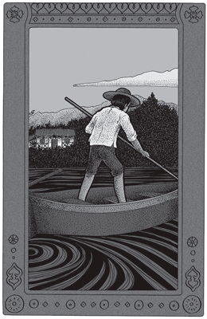
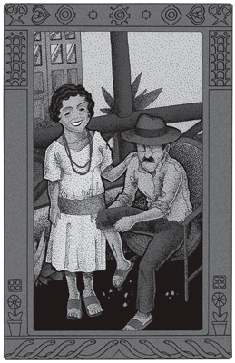

Las aguas cargadas y espumosas del Alto Paraná me llevaron un día de creciente desde San Ignacio al ingenio San Juan, sobre una corriente que iba midiendo seis millas en el canal, y nueve al caer del lomo de las restingas.
Desde abril yo estaba a la espera de esa crecida. Mis vagabundajes en canoa por el Paraná, exhausto de agua, habían concluido por fastidiar al griego. Es éste un viejo marinero de la Marina de guerra inglesa, que probablemente había sido antes pirata en el Egeo, su patria, y que con más certidumbre había sido antes contrabandista de caña en San Ignacio, desde quince años atrás. Era, pues, mi maestro de río.
–Está bien –me dijo al ver el río grueso–. Usted puede pasar ahora por un medio, medio regular marinero. Pero le falta una cosa, y es saber lo que es el Paraná cuando está bien crecido. ¿Ve esa piedraza –me señaló– sobre la corredera del Greco? Pues bien; cuando el agua llegue hasta allí y no se vea una piedra de la restinga, váyase entonces a abrir la boca ante el Teyucuaré por los cuatro lados, y cuando vuelva podrá decir que sus puños sirven para algo. Lleve otro remo también, porque con seguridad va a romper uno o dos, y traiga de su casa una de sus mil latas de kerosene, bien tapada con cera, y así y todo es posible que se ahogue.
Con un remo de más, en consecuencia, me dejé tranquilamente llevar hasta el Teyucuaré. La mitad, por lo menos, de los troncos, pajas podridas, espumas y animales muertos, que bajan con una gran crecida, quedan en esa profunda ensenada. Espesan el agua, cobran aspecto de tierra firme, remontan lentamente la costa, deslizándose contra ella como si fueran una porción desintegrada de la playa, porque ese inmenso remanso es un verdadero mar de sargazos.
Poco a poco, aumentando la elipse de traslación, los troncos son cogidos por la corriente y bajan por fin velozmente girando sobre sí mismos, para cruzar dando tumbos frente a la restinga final del Teyucuaré, erguida hasta ochenta metros de altura.
Estos acantilados de piedra cortan perpendicularmente el río, avanzan en él hasta reducir su cauce a la tercera parte. El Paraná entero tropieza con ellos, busca salida, formando una serie de rápidos casi insalvables aun con aguas bajas, por poco que el remero no esté alerta, y tampoco hay manera de evitarlos, porque la corriente central del río se precipita por la angostura formada, abriéndose desde la restinga en una curva tumultuosa que rasa el remanso inferior y se delimita de él por una larga fila de espumas fijas.
 |
A mi vez me dejé coger por la corriente. |
A mi vez me dejé coger por la corriente. Pasé como una exhalación sobre los mismos rápidos y caí en las aguas agitadas del canal, que me arrastraron de popa y de proa, debiendo tener mucho juicio con los remos que apoyaba alternativamente en el agua para restablecer el equilibrio, en razón de que mi canoa medía sesenta centímetros de ancho, pesaba treinta kilos y tenía tan sólo dos milímetros de espesor en toda su obra; de modo que un firme golpe de dedo podía perjudicarla seriamente. Pero de sus inconvenientes derivaba una velocidad fantástica, que me permitía forzar el río de sur a norte y de oeste a este, siempre, claro está, que no olvidara un instante la inestabilidad del aparato.
En fin, siempre a la deriva, mezclado con palos y semillas, que parecían tan inmóviles como yo, aunque bajábamos velozmente sobre el agua lisa, pasé frente a la isla del Toro, dejé atrás la boca del Yabebirí, el puerto de Santa Ana, y llegué al ingenio, de donde regresé en seguida, pues deseaba volver a San Ignacio en la misma tarde.
Pero en Santa Ana me detuve, titubeando. El griego tenía razón: una cosa es el Paraná bajo o normal, y otra muy distinta con las aguas hinchadas. Aun con mi canoa, los rápidos salvados al remontar el río me habían preocupado, no por el esfuerzo para vencerlos, sino por la posibilidad de volcar. Toda restinga, sabido es, ocasiona un rápido y un remanso adyacente; y el peligro está en esto precisamente: en salir de un agua muerta, para chocar, a veces en ángulo recto, contra una correntada que pasa como un infierno. Si la embarcación es estable, nada hay que temer; pero con la mía nada más fácil que ir a sondar el rápido cabeza abajo, por poco que la luz me faltara, y como la noche caía ya, me disponía a sacar la canoa a tierra y esperar el día siguiente, cuando vi a un hombre y una mujer que bajaban la barranca y se aproximaban.
Parecían marido y mujer; extranjeros, a ojos vistas, aunquefamiliarizados con la ropa del país. Él traía la camisa arremangada hasta el codo, pero no se notaba en los pliegues del remango la menor mancha de trabajo. Ella llevaba un delantal enterizo y un cinturón de hule que la ceñía muy bien. Pulcros burgueses, en suma, pues de tales era el aire de satisfacción y bienestar, asegurados a expensas del trabajo de cualquier otro. Ambos, tras un familiar saludo, examinaron con gran curiosidad la canoa de juguete, y después examinaron el río.
–El señor hace muy bien en quedarse –dijo él–. Con el río así, no se anda de noche.
Ella ajustó su cintura.
–A veces –sonrió coqueteando.
–¡Es claro! –replicó él–. Esto no reza con nosotros… Lo digo por el señor. Y a mí:
–Si el señor se piensa quedar, le podemos ofrecer buena comodidad. Hace dos años que tenemos un negocio; poca cosa, pero uno hace lo que puede… ¿Verdad, señor?
Asentí de buen grado, yendo con ellos hasta el boliche aludido, pues no de otra cosa se trataba. Cené, sin embargo, mucho mejor que en mi propia casa, atendido con una porción de detalles de confort que parecían un sueño en aquel lugar. Eran unos excelentes tipos mis burgueses, alegres y limpios, porque nada hacían. Después de un excelente café, me acompañaron a la playa, donde interné aún más mi canoa, dado que el Paraná, cuando las aguas llegan rojas y cribadas de remolinos, sube dos metros en una noche. Ambos consideraron de nuevo la invisible masa del río.
–Hace muy bien en quedarse, señor –repitió el hombre–. El Teyucuaré no se puede pasar así como así de noche, como está ahora. No hay nadie que sea capaz de pasarlo… con excepción de mi mujer.
Yo me volví bruscamente a ella, que coqueteó de nuevo con el cinturón.
–¿Usted ha pasado el Teyucuaré de noche? –le pregunté.
–¡Oh, sí, señor!… Pero una sola vez… y sin ningún deseo de hacerlo. Entonces éramos un par de locos.
–¿Pero el río…? –insistí.
–¿El río? –cortó él–. Estaba hecho un loco, también. ¿El señor conoce los arrecifes de la isla del Toro, no? Ahora están descubiertos por la mitad. Entonces no se veía nada… Todo era agua, y el agua pasaba por encima bramando, y la oíamos de aquí. ¡Aquél era otro tiempo, señor! Y aquí tiene un recuerdo de aquel tiempo… ¿El señor quiere encender un fósforo?
El hombre se levantó el pantalón hasta la corva, y en la parte interna de la pantorrilla vi una profunda cicatriz, cruzada como un mapa de costurones duros y plateados.
–¿Vio, señor? Es un recuerdo de aquella noche. Una raya… y no muy grande, tampoco…
Entonces recordé una historia, vagamente entreoída, de una mujer que había remado un día y una noche enteros, llevando a su marido moribundo. ¿Y era esa la mujer, aquella burguesita arrobada de éxito y de pulcritud?
–Sí, señor, era yo –se echó a reír, ante mi asombro, que no necesitaba palabras–. Pero ahora me moriría cien veces antes que intentarlo siquiera. Eran otros tiempos; ¡eso ya pasó!
–¡Para siempre! –apoyó él–. Cuando me acuerdo… ¡Estábamos locos, señor! Los desengaños, la miseria si no nos movíamos… ¡Eran otros tiempos, sí!
¡Ya lo creo! Eran otros los tiempos, si habían hecho eso. Pero no quería dormirme sin conocer algún pormenor; y allí, en la oscuridad y ante el mismo río del cual no veíamos a nuestros pies sino la orilla tibia, pero que sentíamos subir y subir hasta la otra costa, me di cuenta de lo que había sido aquella epopeya nocturna.
Engañados respecto de los recursos del país, habiendo agotado en yerros de colono recién llegado el escaso capital que trajeran, el matrimonio se encontró un día al extremo de sus recursos. Pero como eran animosos, emplearon los últimos pesos en una chalana inservible, cuyas cuadernas recompusieron con infinita fatiga, y con ella emprendieron un tráfico ribereño, comprando a los pobladores diseminados en la costa, miel, naranjas, tacuaras, pajas –todo en pequeña escala–, que iban a vender a la playa de Posadas, malbaratando casi siempre su mercancía, pues ignorantes al principio del pulso del mercado, llevaban litros de miel de caña cuando habían llegado barriles de ella el día anterior, y naranjas, cuando la costa amarilleaba.
Vida muy dura y fracasos diarios, que alejaban de su espíritu toda otra preocupación que no fuera llegar de madrugada a Posadas y remontar en seguida el Paraná a fuerza de puño. La mujer acompañaba siempre al marido, y remaba con él.
En uno de los tantos días de tráfico, llegó un 23 de diciembre, y la mujer dijo:
–Podríamos llevar a Posadas el tabaco que tenemos y las bananas de Francés-cué. De vuelta traeremos tortas de Navidad y velitas de color. Pasado mañana es Navidad, y las venderemos muy bien en los boliches.
A lo que el hombre contestó:
–En Santa Ana no venderemos muchas; pero en San Ignacio podremos vender el resto.
Con lo cual descendieron la misma tarde hasta Posadas, para remontar a la madrugada siguiente, de noche aún.
Ahora bien; el Paraná estaba hinchado con sucias aguas de crecientes que se alzaban por minutos. Y cuando las lluvias tropicales se han descargado simultáneamente en toda la cuenca superior, se borran los largos remansos, que son los más fieles amigos del remero.
En todas partes el agua se desliza hacia abajo, todo el inmenso volumen del río es una huyente masa líquida que corre en una sola pieza. Y si a la distancia el río aparece en el canal terso y estirado en rayas luminosas, de cerca, sobre él mismo, se ve el agua revuelta en pesado moaré de remolinos.
El matrimonio, sin embargo, no titubeó un instante en remontar tal río en un trayecto de sesenta kilómetros, sin otro aliciente que el de ganar unos cuantos pesos. El amor nativo al centavo que ya llevaban en sus entrañas se había exasperado ante la miseria entrevista, y aunque estuvieran ya próximos a su sueño dorado –que habían de realizar después–, en aquellos momentos hubieran afrontado el Amazonas entero, ante la perspectiva de aumentar en cinco pesos sus ahorros.
Emprendieron, pues, el viaje de regreso, la mujer en los remos y el hombre a la pala en popa. Subían apenas, aunque ponían en ello su esfuerzo sostenido, que debían duplicar cada veinte minutos en las restingas, donde los remos de la mujer adquirían una velocidad desesperada, y el hombre se doblaba en dos con lento y profundo esfuerzo sobre su pala hundida un metro en el agua.
Pasaron así diez, quince horas, todas iguales. Lamiendo el bosque o las pajas del litoral, la canoa remontaba imperceptiblemente la inmensa y luciente avenida de agua, en la cual la diminuta embarcación, rasando la costa, parecía bien pobre cosa.
–¿Qué...? ¿Una raya? |
El matrimonio estaba en perfecto tren, y no eran remeros a quienes catorce o dieciséis horas de remo podían abatir. Pero cuando ya a la vista de Santa Ana se disponían a atracar para pasar la noche, al pisar el barro el hombre lanzó un juramento y saltó a la canoa: más arriba del talón, sobre el tendón de Aquiles, un agujero negruzco, de bordes lívidos y ya abultados, denunciaba el aguijón de la raya. La mujer sofocó un grito.
–¿Qué…? ¿Una raya?
El hombre se había cogido el pie entre las manos y lo apretaba con fuerza convulsiva.
–Sí…
–¿Te duele mucho? –agregó ella, al ver su gesto. Y él, con los dientes apretados:
–De un modo bárbaro…
En esa áspera lucha que había endurecido sus manos y sus semblantes, habían eliminado de su conversación cuanto no propendiera a sostener su energía. Ambos buscaron vertiginosamente un remedio. ¿Qué? No recordaban nada. La mujer de pronto recordó: aplicaciones de ají macho, quemado.
–¡Pronto, Andrés! –exclamó recogiendo los remos–. Acuéstate en popa; voy a remar hasta Santa Ana.
Y mientras el hombre, con la mano siempre aferrada al tobillo, se tendía en popa, la mujer comenzó a remar.
Durante tres horas remó en silencio, concentrando su sombría angustia en un mutismo desesperado, aboliendo de su mente cuanto pudiera restarle fuerzas. En popa, el hombre devoraba a su vez su tortura, pues nada hay comparable al atroz dolor que ocasiona la picadura de una raya, sin excluir el raspaje de un hueso tuberculoso. Sólo de vez en cuando dejaba escapar un suspiro que a despecho suyo se arrastraba al final en bramido. Pero ella no lo oía o no quería oírlo, sin otra señal de vida que las miradas atrás para apreciar la distancia que faltaba aún.
Llegaron por fin a Santa Ana; ninguno de los pobladores de la costa tenía ají macho. ¿Qué hacer? Ni soñar siquiera en ir hasta el pueblo. En su ansiedad la mujer recordó de pronto que en el fondo del Teyucuaré, al pie del bananal de Blosset y sobre el agua misma, vivía desde meses atrás un naturalista alemán de origen, pero al servicio del Museo de París. Recordaba también que había curado a dos vecinos de mordeduras de víbora, y era, por tanto, más que probable que pudiera curar a su marido.
Reanudó, pues, la marcha, y tuvo lugar entonces la lucha más vigorosa que pueda entablar un pobre ser humano –¡una mujer!– contra la voluntad implacable de la Naturaleza.
Todo: el río creciendo y el espejismo nocturno que volcaba el bosque litoral sobre la canoa, cuando en realidad ésta trabajaba en plena corriente a diez brazas; la extenuación de la mujer y sus manos, que mojaban el puño del remo de sangre y agua serosa; todo: río, noche y miseria sujetaban la embarcación.
Hasta la boca del Yabebirí pudo aun ahorrar alguna fuerza; pero en la interminable cancha desde el Yabebirí hasta los primeros cantiles del Teyucuaré, no tuvo un instante de tregua, porque el agua corría por entre las pajas como en el canal, y cada tres golpes de remo levantaban camalotes en vez de agua; los cuales cruzaban sobre la proa sus tallos nudosos y seguían a la rastra, por lo cual la mujer debía ir a arrancarlos bajo el agua, y cuando tornaba a caer en el banco, su cuerpo, desde los pies a las manos, pasando por la cintura y los brazos era un único y prolongado sufrimiento.
Por fin, al norte, el cielo nocturno se entenebrecía ya hasta el cenit por los cerros del Teyucuaré, cuando el hombre, que desde hacía un rato había abandonado su tobillo para asirse con las dos manos a la borda, dejó escapar un grito.
La mujer se detuvo.
–¿Te duele mucho?
–Sí… –respondió él, sorprendido a su vez y jadeando–. Pero no quise gritar… Se me escapó.
Y agregó más bajo, como si temiera sollozar si alzaba la voz:
–No lo voy a hacer más…
Sabía muy bien lo que era en aquellas circunstancias y ante su pobre mujer realizando lo imposible, perder el ánimo. El grito se le había escapado, sin duda, por más que allá abajo, en el pie y el tobillo, el atroz dolor se exasperaba en punzadas fulgurantes que lo enloquecían.
Pero ya habían caído bajo la sombra del primer acantilado, rasando y golpeando con el remo de babor la dura mole que ascendía a pico hasta cien metros. Desde allí hasta la restinga sur del Teyucuaré el agua está muerta y remansa a trechos. Inmenso desahogo del que la mujer no pudo disfrutar, porque de popa se había alzado otro grito. La mujer no volvió la vista. Pero el herido, empapado en sudor frío y temblando hasta los mismos dedos adheridos al listón de la borda, no tenía ya fuerza para contenerse, y lanzaba un nuevo grito.
Durante largo rato el marido conservó un resto de energía, de valor, de conmiseración por aquella otra miseria humana, a la que robaba de ese modo sus últimas fuerzas, y sus lamentos rompían de largo en largo. Pero al fin toda su resistencia quedó deshecha en una papilla de nervios destrozados, y desvariado de tortura, sin darse él mismo cuenta, con la boca entreabierta para no perder tiempo, sus gritos se repitieron a intervalos regulares y acompasados en un ¡ay! De supremo sufrimiento.
La mujer, entretanto, el cuello doblado, no apartaba los ojos de la costa para conservar la distancia. No pensaba, no oía, no sentía: remaba. Sólo cuando un grito más alto, un verdadero clamor de tortura rompía la noche, las manos de la mujer se desprendían a medias del remo.
Hasta que por fin soltó los remos y echó los brazos sobre la borda.
–No grites… –murmuró.
–¡No puedo! –clamó él–. Es demasiado sufrimiento.
Ella sollozaba:
–¡Ya sé…! ¡Comprendo…! Pero no grites… ¡No puedo remar!
Y él:
–Comprendo también… ¡Pero no puedo! ¡Ay…!
Y enloquecido de dolor y cada vez más alto:
–¡No puedo! ¡No puedo! ¡No puedo!…
La mujer quedó largo rato aplastada sobre los brazos, inmóvil, muerta. Al fin se incorporó y reanudó muda la marcha.
Lo que la mujer realizó entonces, esa misma mujercita que llevaba ya dieciocho horas de remo en las manos, y que en el fondo de la canoa llevaba a su marido moribundo, es una de esas cosas que no se tornan a hacer en la vida. Tuvo que afrontar en las tinieblas el rápido sur del Teyucuaré, que la lanzó diez veces a los remolinos del canal. Intentó otras diez veces sujetarse al peñón para doblarlo con la canoa a la rastra, y fracasó. Tornó al rápido, que logró por fin incidir con el ángulo debido, y ya en él se mantuvo sobre su lomo treinta y cinco minutos remando vertiginosamente para no derivar. Remó todo ese tiempo con los ojos escocidos por el sudor que la cegaba, y sin poder soltar un solo instante los remos. Durante esos treinta y cinco minutos tuvo a la vista, a tres metros, el peñón que no podía doblar, ganando apenas centímetros cada cinco minutos, y con la desesperante sensación de batir el aire con los remos, pues el agua huía velozmente.
Con qué fuerzas, que estaban agotadas; con qué increíble tensión de sus últimos nervios vitales pudo sostener aquella lucha de pesadilla, ella menos que nadie podría decirlo, y sobre todo si se piensa que por único estimulante, la lamentable mujercita no tuvo más que el acompasado alarido de su marido en popa.
 |
La mujercita dejó hacer, riendo. |
El resto del viaje –dos rápidos más en el fondo del golfo y uno final al costear el último cerro, pero sumamente largo– no requirió un esfuerzo superior a aquél. Pero cuando la canoa embicó por fin sobre la arcilla del puerto de Blosset, y la mujer pretendió bajar para asegurar la embarcación, se encontró de repente sin brazos, sin piernas y sin cabeza –nada sentía de sí misma, sino el cerro que se volcaba sobre ella–; y cayó desmayada.
–¡Así fue, señor! Estuve dos meses en cama, y ya vio cómo me quedó la pierna. ¡Pero el dolor, señor! Si no es por ésta, no hubiera podido contarle el cuento, señor –concluyó poniéndole la mano en el hombro a su mujer.
La mujercita dejó hacer, riendo. Ambos sonreían, por lo demás, tranquilos, limpios y establecidos por fin con un boliche lucrativo, que había sido su ideal.
Y mientras quedábamos de nuevo mirando el río oscuro y tibio que pasaba creciendo, me pregunté qué cantidad de ideal hay en la entraña misma de la acción, cuando prescinde en un todo del móvil que la ha encendido, pues allí, tal cual, desconocido de ellos mismos, estaba el heroísmo a la espalda de los míseros comerciantes.
Tomado de Anaconda (1921)